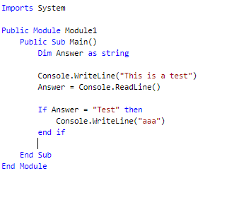
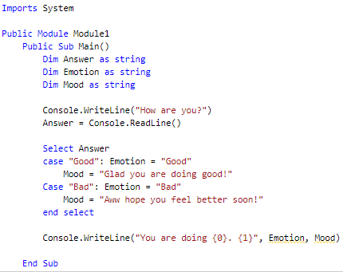
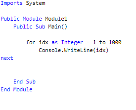

Home
About Me
Product
VB Toturials
My Resume
Visual Basic Toturials
Today I will show you how to use some commands for Visual Basic.
These will include the "Dim" command, If-then/case statements, For loops, inputs and outputs.
Lets start with the Dim command. The Dim command can be used to declare variables.
An example of this could be "Answer".
You can have different tags at the end such as integer or string. This can then be used in combination
with an if-then to output a certain result based on a certain input. The input is whatever you type
into the readline and the output is what the computer puts out in the writeline. An example is shown bellow.

An If-Then statment can be used to give a certain output based on the input, such as
"If Answer = "one" then Console.WriteLine("OK")". Case statements also deliver a simular function. An example is shown bellow.

As shown, you do need to have multiple Variables in order to use case statements effectivly. At the bottom you may have
seen a {0} and a {1}. These are the variables "Emotion" and "Mood" AKA the input and the output of the Case statement.
The final command is a For Loop. this is used to tell the computer how much to repeat something.

I suggest experimenting with these commands to get a feel of how they work and what the potential of them involves.